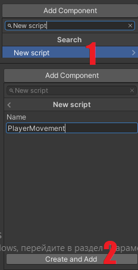
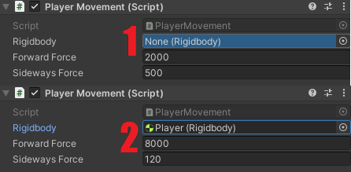

В этом уроке ты создашь свою первую программу, которая позволит изменять свойства объектов и заставлять нашего игрока двигаться. Когда нам нужно написать какой-то код в Unity, нам нужно создать так называемый Скрипт. Для этого нам нужно выбрать объект, в данном случае нашего игрока, который будет исполнять этот код, затем в Иерархии нажать Add Component -> New Scipt -> Назвать его PlayerMovement -> Create and Add

Теперь в Инспекторе нашего игрока появился наш скрипт. Всё дело в том, что скрипты в Unity - это настраиваемые компоненты объектов. Также наш скрипт появился в Панели проекта внизу
Если нажать на только что созданный скрипт двойным щелчком мыши, то перед тобой появится окно редактирования кода, которое выглядит так
Здесь написано много страшных слов. И лучшим советом для тебя будет игнорирование большинства непонятных слов. Ниже находится весь код с комментариями, который ты должен написать (комментарии писать необязательно)
После этого нужно сохранить твой код и вернуться в Unity. Для того чтобы наш код работал нужно в компонент Rigidbody в нашем скрипте перенести Rigidbody нашего кубика. Для этого нужно этот компонент с помощью мыши перетянуть в поле нашего скрипта, как показано на картинке. А также установить значения ForwardForce и SidewaysForce равные 8000 и 120 соответственно

Для того, чтобы игрок плавно передвигался по поверхности, нам нужно убрать трение между кубиком и платформой. Нажми пкм на Панель Проекта и выбери Create -> Physic Material. Назовём его Slippery и сбросим его значения трения (Dynamic Friction и Static Friction) до 0
Следующее, что нужно сделать это перенести этот материал (Slippery) с панели проекта на нашу дорогу на сцене. И если мы теперь запустим нашу игру, то наш кубик будет скользить по поверхности без трения. Но наблюдаем мы за этим считанные секунды из-за того, что наша камера остаётся на месте, а игрок уносится вдаль. Чтобы камера следовала за игроком нам нужно нажать на неё и добавить ещё один скрипт FollowPlayer, который выглядит так
Чтобы наш скрипт заработал, нужно в его поле Player в Инспекторе перетянуть нашего игрока (Player) из Иерархии , а в поле Offset вписать значения 1 и -5 в Y и Z соответственно
Последним штрихом в этом уроке будет небольшая корректировка компонента Rigidbody и Time, для этого в компоненте Rigidbody игрока нужно изменить элементы Drag и Collision Detection. А в компоненте Time (Edit->Project settings->Time) снизить Fixed Timestep до 0.01, для того чтобы сделать игру более плавной
Сохраняем все изменения("Ctrl"+"S") и приступаем к следующему уроку